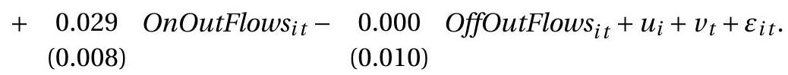

17 Difference in Differences
17.1 Introduction
One of the most popular ways to estimate the effect of a policy change is the method of difference in differences, often called “diff in diffs”. Estimation is typically a two-way panel data regression with a policy indicator as a regressor. Clustered variance estimation is generally recommended for inference.
In order to intrepret a difference in difference estimate as a policy effect there are three key conditions. First, that the estimated regression is the correct conditional expectation. In particular, this requires that all trends and interactions are properly included. Second, that the policy is exogenous it satisfies conditional independence. Third, there are no other relevant unincluded factors coincident with the policy change. If these assumptions are satisfied the difference in difference estimand is a valid causal effect.
17.2 Minimum Wage in New Jersey
The most well-known application of the difference in difference methodology is Card and Krueger (1994) who investigated the impact of New Jersey’s 1992 increase of the minimum hourly wage from \(\$ 4.25\) to \(\$ 5.05\). Classical economics teaches that an increase in the minimum wage will lead to decreases in employment and increases in prices. To investigate the magnitude of this impact the authors surveyed a panel of 331 fast food restaurants in New Jersey during the period 2/15/1992-3/4/1992 (before the enactment of the minimum wage increase) and then again during the period 11/5/1992-12/31/1992 (after the enactment). Fast food restaurants were selected for investigation as they are a major employer of minimum wage employees. Before the change about \(30 %\) of the sampled workers were paid the minimum wage of \(\$ 4.25\).
Table 18.1: Average Employment at Fast Food Restaurants
| New Jersey | Pennsylvania | Difference | |
|---|---|---|---|
| Before Increase | \(20.43\) | \(23.38\) | \(2.95\) |
| After Increase | \(20.90\) | \(21.10\) | \(0.20\) |
| Difference | \(0.47\) | \(-2.28\) | \(\mathbf{2 . 7 5}\) |
The data file CK1994 is extracted from the original Card-Krueger data set and is posted on the textbook webpage. Table \(18.1\) (first column) displays the mean number \({ }^{1}\) of full-time equivalent employees \({ }^{2}\) at New Jersey fast food restaurants before and after the minimum wage increase. Before the increase the average number of employees was 20.4. After the increase the average number of employees was 20.9. Contrary to the predictions of conventional theory employment slightly increased (by \(0.5\) employees per restaurant) rather than decreased.
This estimate - the change in employment - could be called a difference estimator. It is the change in employment coincident with the change in policy. A difficulty in interpretation is that all employment change is attributed to the policy. It does not provide direct evidence of the counterfactual - what would have happened if the minimum wage had not been increased.
A difference in difference estimator improves on a difference estimator by comparing the change in the treatment sample with a comparable change in a control sample.
Card and Krueger selected eastern Pennsylvania for their control sample. The minimum wage was constant at \(\$ 4.25\) an hour in the state of Pennsylvania during 1992. At the beginning of the year starting wages at fast food restaurants in the two states were similar. The two areas (New Jersey and eastern Pennsylvania) share further similarities. Any trends or economic shocks which affect one state are likely to affect both. Therefore Card and Krueger argued that it is appropriate to treat eastern Pennsylvania as a control. This means that in the absence of a minimum wage increase they expected the same changes in employment to occur in both New Jersey and eastern Pennsylvania.
Card and Krueger surveyed a panel of 79 fast food restaurants in eastern Pennsylvania simultaneously while surveying the New Jersey restaurants. The average number of full-time equivalent employees is displayed in the second column of Table 18.1. Before the policy change the average number of employees was 23.4. After the policy change the average number was 21.1. Thus in Pennsylvania average employment decreased by \(2.3\) employees per restaurant.
Treating Pennsylvania as a control means comparing the change in New Jersey (0.5) with that in Pennsylvnia \((-2.3)\). The difference ( \(2.75\) employees per restaurant) is the difference-in-difference estimate of the impact of the minimum wage increase. In complete contradiction to conventional economic theory the estimate indicates an increase in employment rather than a decrease. This surprising estimate has been widely discussed among economists \({ }^{3}\) and the popular press.
It is constructive to re-write the estimates from Table \(18.1\) in regression format. Let \(Y_{i t}\) denote employment at restaurant \(i\) surveyed at time \(t\). Let State \(_{i}\) be a dummy variable indicating the state, with State \(_{i}=1\) for New Jersey and State \(_{i}=0\) for Pennsylvania. Let Time \({ }_{t}\) be a dummy variable indicating the time period, with Time \(e_{t}=0\) for the period before the policy change and Time \(e_{t}=1\) for the period after the policy change. Let \(D_{i t}\) denote a treatment dummy, with \(D_{i t}=1\) if the minimum wage equals \(\$ 5.05\) and \(D_{i t}=0\) if the minimum wage equals \(\$ 4.25\). In this application it equals the interaction dummy \(D_{i t}=\) State \(_{i}\) Time \(_{t}\).
Table \(18.1\) is a saturated regression in the two dummy variables and can therefore be written as the regression equation
\[ Y_{i t}=\beta_{0}+\beta_{1} \text { State }_{i}+\beta_{2} \text { Time }_{t}+\theta D_{i t}+\varepsilon_{i t} . \]
Indeed the coefficients can be written in terms of Table \(18.1\) by the following correspondence:
\({ }^{1}\) Our calculations drop restaurants if they were missing the number of full-type equivalent employees in either survey.
\({ }^{2}\) Following Card and Krueger full-time equivalent employees is defined as the sum of the number of full-time employees, managers, and assistant managers, plus one-half of the number of part-time employees.
\({ }^{3}\) Most economists do not take the estimate literally - they do not believe that increasing the minimum wage will cause employment increases. Instead it has been interpreted as evidence that small changes in the minimum wage may have only minor impacts on employment levels.
| New Jersey | Pennsylvania | Difference | |
|---|---|---|---|
| Before Increase | \(\beta_{0}+\beta_{1}\) | \(\beta_{0}\) | \(\beta_{1}\) |
| After Increase | \(\beta_{0}+\beta_{1}+\beta_{2}+\theta\) | \(\beta_{0}+\beta_{2}\) | \(\beta_{1}+\theta\) |
| Difference | \(\beta_{2}+\theta\) | \(\beta_{2}\) | \(\theta\) |
We see that the coefficients in the regression (18.1) correspond to interpretable difference and difference in difference estimands. \(\beta_{1}\) is the difference estimand of the effect of “New Jersey vs. Pennsylvania” in the period before the policy change. \(\beta_{2}\) is the difference estimand of the time effect in the control state. \(\theta\) is the difference in difference estimand - the change in New Jersey relative to the change in Pennsylvania.
Our estimate of the regression (18.1) is
\[ \begin{aligned} & Y_{i t}=23.4-2.9 \text { State }_{i}-2.3 \text { Time }_{t}+2.75 D_{i t}+\varepsilon_{i t} . \\ & \text { (1.4) (1.5) (1.2) (1.34) } \end{aligned} \]
The standard errors are clustered by restaurant. As expected the coefficient \(\widehat{\theta}\) on the treatment dummy precisely equals the difference in difference estimate from Table 18.1. The coefficient estimates can be interpreted as described. The pre-change difference between New Jersey and Pennsylvania is \(-2.9\) and the time effect is \(-2.3\). The difference in difference effect is \(2.75\). The t-statistic to test the hypothesis of zero effect is just above 2 with an asymptotic \(p\)-value of \(0.04\).
Since the observations are divided into the groups State \(_{i}=0\) and State \(_{i}=1\) and Time \(_{t}\) is equivalent to a time index this regression is identical to a two-way fixed effects regression of \(Y_{i t}\) on \(D_{i t}\) with state and time fixed effects. Furthermore, because the regressor \(D_{i t}\) does not vary across individuals within the state this fixed effects regression is unchanged if restaurant-level fixed effects are included instead of state fixed effects. (Restaurant fixed effects are orthogonal to any variable demeaned at the state level. See Exercise 18.1.) Thus the above regression is identical to the two-way fixed effects regression
\[ Y_{i t}=\theta D_{i t}+u_{i}+v_{t}+\varepsilon_{i t} \]
where \(u_{i}\) is a restaurant fixed effect and \(v_{t}\) is a time fixed effect. The simplest method to implement this is by a one-way fixed effects regression with time dummies. The estimates are
\[ Y_{i t}=\underset{(1.34)}{2.75} D_{i t}-\begin{gathered} 2.3 \\ (1.2) \end{gathered} \text { Time }_{t}+u_{i}+\varepsilon_{i t} \]
which are identical to the previous regression.
Equation (18.3) is the basic difference-in-difference model. It is a two-way fixed effects regression of the response \(Y_{i t}\) on a binary policy \(D_{i t}\). The coefficient \(\theta\) corresponds to the double difference in sample means and can be interpreted as the policy impact (also called the treatment effect) of \(D\) on \(Y\). (We discuss identification in the next section.) Our presentation (and the Card-Krueger example) focuses on the basic case of two aggregate units (states) and two time periods. The regression formulation (18.3) is convenient as it can be easily generalized to allow for multiple states and time periods. Doing so provides more convincing evidence of an identified policy effect. The equation (18.3) can also be generalized by changing the trend specification and by using a continuous treatment variable.
Another common generalization is to augment the regression with controls \(X_{i t}\). This model is
\[ Y_{i t}=\theta D_{i t}+X_{i t}^{\prime} \beta+u_{i}+v_{t}+\varepsilon_{i t} \]
Many empirical studies report estimates both of the basic model and regressions with controls. For example we could augment the Card-Krueger regression to include the variable hoursopen, the number of hours a day the restaurant is open. A restaurant with longer hours will tend to have more employees.
\[ Y_{i t}=\underset{(1.31)}{2.84} D_{i t}-\underset{(1.2)}{2.2} \text { Time }_{t}+\underset{(0.4)}{1.2} \text { hoursopen }_{i t}+u_{i}+\varepsilon_{i t} . \]
The estimated effect is that a restaurant employs an additional \(1.2\) employees for each hour open and this effect is statistically significant. The estimated treatment effect is not meaningfully changed.
17.3 Identification
Consider the difference-in-difference equation (18.5) for \(i=1, \ldots, N\) and \(t=1, \ldots, T\). We are interested in conditions under which the coefficient \(\theta\) is the causal impact of the treatment \(D_{i t}\) on the outcome \(Y_{i t}\). The answer can be found by applying Theorem \(2.12\) from Section \(2.30\).
In Section \(2.30\) we introduced the potential outcomes framework which writes the outcome as a function of the treatment, controls, and unobservables. The outcome (e.g. employment at a restaurant) is written as \(Y=h(D, X, e)\) where \(D\) is treatment (minimum wage policy), \(X\) are controls, and \(e\) is a vector of unobserved factors. Model (18.5) specifies that \(h(D, X, e)\) is separable and linear in its arguments and that the unobservables consist of individual-specific, time-specific, and idiosyncratic effects.
We now present sufficient conditions under which the coefficient \(\theta\) can be interpreted as a causal effect. Recall the two-way within transformation (17.65) and set \(\ddot{Z}_{i t}=\left(\ddot{D}_{i t}, \ddot{X}_{i t}^{\prime}\right)^{\prime}\).
Theorem 18.1 Suppose the following conditions hold:
\(Y_{i t}=\theta D_{i t}+X_{i t}^{\prime} \beta+u_{i}+v_{t}+\varepsilon_{i t}\).
\(\mathbb{E}\left[\ddot{Z}_{i t} \ddot{Z}_{i t}^{\prime}\right]>0\).
\(\mathbb{E}\left[X_{i t} \varepsilon_{i s}\right]=0\) for all \(t\) and \(s\).
Conditional on \(X_{i 1}, X_{i 2}, \ldots, X_{i T}\) the random variables \(D_{i t}\) and \(\varepsilon_{i s}\) are statistically independent for all \(t\) and \(s\).
Then the coefficient \(\theta\) in (18.5) equals the average causal effect for \(D\) on \(Y\) conditional on \(X\).
Condition 1 states that the outcome equals the specified linear regression model which is additively separable in the observables, individual effect, and time effect.
Condition 2 states that the two-way within transformed regressors have a non-singular design matrix. This requires that all elements of \(D_{i t}\) and \(X_{i t}\) vary across time and individuals.
Condition 3 is the standard exogeneity asumption for regressors in a fixed-effects model.
Condition 4 states that the treatment variable is conditionally independent of the idiosyncratic error. This is the conditional independence assumption for fixed effects regression.
To show Theorem 18.1 apply the two-way within transformation (17.65) to (18.5). We obtain
\[ \ddot{Y}_{i t}=\theta \ddot{D}_{i t}+\ddot{X}_{i t}^{\prime} \beta+\ddot{\varepsilon}_{i t} . \]
Under Condition 2 the projection coefficients \((\theta, \beta)\) are uniquely defined and under Conditions 3 and 4 they equal the linear regression coefficients. Thus \(\theta\) is the regression derivative with respect to \(D\). Condition 4 implies that conditional on \(\ddot{X}_{i t}\) the random variables \(\ddot{D}_{i t}\) and \(\ddot{\varepsilon}_{i s}\) are statistically independent. Theorem \(2.12\) shows that the regression derivative \(\theta\) equals the average causal effect as stated.
The assumption that \(D\) and \(\varepsilon\) are independent is the fundamental exogeneity assumption. To intrepret \(\theta\) as a treatment effect it is important that \(D\) is defined as the treatment and not simply as an interaction (time and state) dummy. This is subtle. Examine equation (18.5) recalling that \(D\) is defined as the treatment (an increase in the minimum wage). In this equation the error \(\varepsilon_{i t}\) contains all variables and effects not included in the regression. Thus if there are other changes in New Jersey which are coincident with the minimum wage increase the assumption that \(D\) and \(\varepsilon\) are independent means that those coincident changes are independent of \(\varepsilon\) and thus do not affect employment. This is a strong assumption. Once again, Condition 4 states that all other effects which are coincident with the minimum wage increase have no effect on employment. Without this assumption it would not be possible to claim that the diff-in-diff regression identifies the causal effect of the treatment.
Furthermore, independence of \(D_{i t}\) and \(\varepsilon_{i s}\) means that neither can be affected by the other. This means that the policy (treatment) was not enacted in response to knowledge about the response variable in either period and it means that the outcome (employment) did not change in the first period in anticipation of the upcoming policy change.
It is difficult to know if the exogeneity of \(D\) is a reasonable assumption. It is similar to instrument exogeneity in instrumental variable regression. Its validity hinges on a well-articulated structural argument. An empirical investigation based on a difference-in-difference specification needs to make an explicit case for exogeneity of \(D\) similar to that for IV regression.
In the case of the Card-Krueger application the authors argue that the policy was exogeneous because it was adopted two years before taking effect. At the time of the passage of the legislation the economy was in an expansion but by the time of adoption the economy has slipped into recession. This suggests that it is credible to assume that the policy decision in 1990 was not affected by employment levels in 1992. Furthermore, concern about the impact of the increased minimum wage during a recession led to a serious discussion about reversing the policy, meaning that there was uncertainty about whether or not the policy would actually be enacted at the time of the first survey. It thus seems credible that employment decisions at that time were not determined in anticipation of the upcoming minimum wage increase.
The authors do not discuss, however, whether or not there were other coincident events in the New Jersey or Pennsylvania economies during 1992 which could have affected employment differentially in the two states. It seems plausible that there could have been many such coincident events. This seems to be the greatest weakness in their identification argument.
Identification (the conditions for Theorem 18.1) also requires that the regression model is correctly specified. This means that the true model is linear in the specified variables and all interactions are included. Since the basic \(2 \times 2\) specification is a saturated dummy variable model it is necessarily a conditional expectation and thus correctly specified. This is not the case in applications with more than two states or time periods and thus model specification needs to be carefully considered in such cases.
17.4 Multiple Units
The basic difference-in-difference model has two aggregate units (e.g. states) and two time periods. Additional information can be obtained if there are multiple units or multiple time periods. In this section we focus on the case of multiple units. There can be multiple treatment units, multiple control units, or both. In this section we suppose that the number of periods is \(T=2\). Let \(N_{1} \geq 1\) be the number of untreated (control) units, and \(N_{2} \geq 1\) be the number of treated units, with \(N=N_{1}+N_{2}\).
The basic regression model
\[ Y_{i t}=\theta D_{i t}+u_{i}+v_{t}+\varepsilon_{i t} \]
imposes two strong restrictions. First, that all units are equally affected by time as \(v_{t}\) is common across \(i\). Second, that the treatment effect \(\theta\) is common across all treated units.
The Card-Krueger data set only contains observations from two states but the authors did record additional variables including the region of the state. They divided New Jersey into three regions (North, Central, and South) and eastern Pennsylvania into two regions ( 1 for northeast Philadelphia suburbs and 2 for the remainder).
Table \(18.2\) displays the mean number of full-time equivalent employees by region, before and after the minimum wage increase. We observe that two of the three New Jersey regions had nearly identical increases in employment and all three changes are small. We can also observe that both of the Pennsylvania regions had employment decreases though with different magnitudes.
We can test the assumption of equal treatment effect \(\theta\) by a regression exclusion test. This can be done by adding interaction dummies to the regression and testing for the exclusion of the interactions. As there are three treated regions in New Jersey we include two of the three New Jersey region dummies interacted with the time index. In general we would include \(N_{2}-1\) such interactions. These coefficients measure the treatment effect difference across regions. Testing that these two coefficients are zero we obtain a p-value of \(0.60\) which is far from significant. Thus we accept the hypothesis that the treatment effect \(\theta\) is common across the New Jersey regions.
In contrast, when the treatment effect \(\theta\) varies we call this a heterogeneous treatment effect. It is not a violation of the treatment effect framework but it can be considerably more complicated to analyze. (A model which incorrectly imposes a homogeneous treatment effect is misspecified and produces inconsistent estimates.)
A more serious problem arises if the control effect is heterogeneous. The control effect is the change in the control group. Table \(18.2\) breaks down the estimated control effect across the two Pennsylvania regions. While both estimates are negative they are somewhat different from one another. If the effects are distinct there is not a homogeneous control effect. We can test the assumption of equal control effects by a regression exclusion test. As there are two Pennsylvania regions we include the interaction of one of the Pennsylvania regions with the time index. (In general we would include \(N_{1}-1\) interactions.) This coefficient measures the difference in the control effect across the regions. We test that this coefficient is zero obtaining a t-statistic of \(1.2\) and a p-value of \(0.23\). It is not statistically significant, meaning that we cannot reject the hypothesis that the control effect is homogeneous.
In contrast, if the control effect were heterogeneous then the difference-in-difference estimation strategy is misspecified. The method relies on the ability to identify a credible control sample. Therefore if a test for equal control effects rejects the hypothesis of homogeneous control effects this should be taken as evidence against interpretation of the difference-in-difference parameter as a treatment effect.
Table 18.2: Average Employment at Fast Food Restaurants
| South NJ | Central NJ | North NJ | PA 1 | PA 2 | |
|---|---|---|---|---|---|
| Before Increase | \(16.6\) | \(22.0\) | \(22.0\) | \(24.8\) | \(22.2\) |
| After Increase | \(17.3\) | \(21.4\) | \(22.7\) | \(21.0\) | \(21.2\) |
| Difference | \(0.7\) | \(-0.6\) | \(0.7\) | \(-3.8\) | \(-1.0\) |
17.5 Do Police Reduce Crime?
DiTella and Schargrodsky (2004) use a difference-in-difference approach to study the question of whether the street presence of police officers reduces car theft. Rational crime models predict that the the presence of an observable police force will reduce crime rates (at least locally) due to deterrence. The causal effect is difficult to measure, however, as police forces are not allocated exogenously, but rather are allocated in anticipation of need. A difference-in-difference estimator requires an exogenous event which changes police allocations. The innovation in DiTella-Schargrodsky was to use the police response to a terrorist attack as exogenous variation.
In July 1994 there was a horrific terrorist attack on the main Jewish center in Buenos Aires, Argentina. Within two weeks the federal government provided police protection to all Jewish and Muslim buildings in the country. DiTella and Schargrodsky (2004) hypothesized that their presence, while allocated to deter a terror or reprisal attack, would also deter other street crimes such as automobile theft locally to the deployed police. The authors collected detailed information on car thefts in selected neighborhoods of Buenos Aires for April-December 1994, resulting in a panel for 876 city blocks. They hypothesized that the terrorist attack and the government’s response were exogenous to auto thievery and is thus a valid treatment. They postulated that the deterrence effect would be strongest for any city block which contained a Jewish institution (and thus police protection). Potential car thiefs would be deterred from a burglary due to the threat of being caught. The deterrence effect was expected to weaken as the distance from the protected sites increased. The authors therefore proposed a difference-in-difference estimator based on the average number of car thefts per block, before and after the terrorist attack, and between city blocks with and without a Jewish institution. Their sample has 37 blocks with Jewish institutions (the treatment sample) and 839 blocks without an institution (the control sample).
The data file DS2004 is a slightly revised version of the author’s AER replication file and is posted on the textbook webpage.
Table 18.3: Number of Car Thefts by City Block
| Same Block | Not on Same Block | Difference | |
|---|---|---|---|
| April-June | \(0.112\) | \(0.095\) | \(-0.017\) |
| August-December | \(0.035\) | \(0.105\) | \(0.070\) |
| Difference | \(-0.077\) | \(0.010\) | \(-\mathbf{0 . 0 8 7}\) |
Table \(18.3\) displays the average number of car thefts per block, separately for the months before the July attack and the months after the July attack, and separately for city blocks which have a Jewish institution (and therefore received police protection starting in late July) and for other city blocks. We can see that the average number of car thefts dramatically decreased in the protected city blocks, from \(0.112\) per month to 0.035, while the average number in non-protected blocks was near-constant, rising from \(0.095\) to \(0.105\). Taking the difference in difference we find that the effect of police presence decreased car thefts by \(0.087\), which is about \(78 %\).
A general way to estimate a diff-in-diff model is a regression of the form (18.3) where \(Y_{i t}\) is the number of car thefts on block \(i\) during month \(t\), and \(u_{i}\) and \(v_{t}\) are block and month fixed effects. This regression \(^{4}\) yields the same estimate of \(0.087\) because the panel is balanced and there are no control variables.
The model (18.3) makes the strong assumption that the treatment effect is constant across the five treated months. We investigate this assumption in Table \(18.4\) which breaks down the car thefts by month. For the control sample the number of car thefts is near constant across the months. For seven of the eight
\({ }^{4}\) We omit the observations for July as the car theft data is only for the first half of the month. Table 18.4: Number of Car Thefts by City Block
| Pre-Attack | April | Same Block | Not on Same Block | Difference |
|---|---|---|---|---|
| May | \(0.112\) | \(0.110\) | \(-0.012\) | |
| June | \(0.088\) | \(0.100\) | \(0.012\) | |
| Post-Attack | August | \(0.128\) | \(0.076\) | \(-0.052\) |
| September | \(0.014\) | \(0.111\) | \(0.064\) | |
| October | \(0.061\) | \(0.099\) | \(0.085\) | |
| November | \(0.027\) | \(0.108\) | \(0.047\) | |
| December | \(0.027\) | \(0.100\) | \(0.073\) | |
| \(0.106\) | \(0.079\) |
months the average number per block ranges from \(0.10\) to \(0.11\), with only one month (June) a bit lower at \(0.08\). In the treatment sample the average number of thefts per block in the three months before the terrorist atack are similar to the averages in the control sample. But in the five months following the attack the number of car thefts is uniformly reduced. The averages range from \(0.014\) to \(0.061\). In each month after the attack the control sample has lower thefts with averages ranging from \(0.047\) to \(0.085\). Given the small sample size (37) of the treatment sample this is strikingly uniform evidence.
We can formally test the homogeneity of the treatment effect by including four dummy variables for the interactions of four post-attack months with the treatment sample and then testing the exclusion of these variables. The \(\mathrm{p}\)-value for this test is \(0.81\), exceedingly far from significant. Thus there is no reason in the data to be suspicious of the homogeneity assumption.
The goal was to estimate the causal effect of police presence as a deterrence for crime. Let us evaluate the case for identification. It seems reasonable to treat the terrorist attack as exogenous. The government response also appears exogenous. Neither is reasonably related to the auto theft rate. We also observe that the evidence in Tables \(18.3\) and \(18.4\) indicates that theft rates were similar in the pre-attack treatment and control samples. Thus the additional police protection seems credibly provided for the purpose of attack prevention rather than as an excuse for crime prevention. The general homogeneity of the theft rate across months, once allowing for the treatment effect, gives credibility to the claim that the police response was a causal effect. The terror attack itself did not reduce car theft rates as there seems to be no measurable effect outside of the treatment sample. Finally, while the paper does not explicitly address whether or not there was any other coincident event in July 1994 which may have effected these specific city blocks it is difficult to conceive of an alternative explanation for such a large effect. Our conclusion is that this is a strong identification argument. Police presence greatly reduces the incidence of car theft.
The authors asserted the inference that police presence deters crime more broadly. This is a tenuous extension as the paper does not provide direct evidence of this claim. While it may seem reasonable we should be cautious about making generalizations without supporting evidence.
Overall, DiTella and Schargrodsky (2004) is an excellent example of a well-articulated and credibly identified difference-in-difference estimate of an important policy effect.
17.6 Trend Specification
Some applications (including the two introduced earlier in this chapter) apply to a short period of time such as one year in which case we may not expect the variables to be trended. Other applications cover many years or decades in which case the variables are likely to be trended. These trend can reflect long-term growth, business cycle effects, changing tastes, or many other features. If trends are incor- rectly specified then the model will be misspecified and the estimated policy effect will be inconsistent due to omitted variable bias. Consider the difference-in-difference equation (18.5). This model imposes the strong assumption that the trends in \(Y_{i t}\) are entirely explained by the included controls \(X_{i t}\) and the common unobserved time component \(v_{t}\). This can be quite restrictive. It is reasonable to expect that trends may differ across units and are not fully captured by observed controls.
One way to think about this is in terms of overidentification. For simplicity suppose there are no controls and the panel is balanced. Then there are \(N T\) observations. The two-way model with a policy effect has \(N+T\) coefficients. Unless \(N=T=2\) this model is overidentified. In addition to considering heterogeneous treatment effects it is reasonable to consider heterogeneous trends.
One generalization is to include interactions of a linear trend with a control variable. This model is
\[ Y_{i t}=\theta D_{i t}+X_{i t}^{\prime} \beta+Z_{i}^{\prime} \delta t+u_{i}+v_{t}+\varepsilon_{i t} . \]
It specifies that the trend in \(Y_{i t}\) differs across units depending on the controls \(Z_{i}\).
A broader generalization is to include unit-specific linear time trends. This model is
\[ Y_{i t}=\theta D_{i t}+X_{i t}^{\prime} \beta+u_{i}+v_{t}+t w_{i}+\varepsilon_{i t} . \]
In this model \(w_{i}\) is a time trend fixed effect which varies across units. If there are no controls this model has \(2 N+T\) coefficients and is identified as long as \(T \geq 4\).
Estimation of model (18.6) can be done one of three ways. If \(N\) is small (for example, applications with state-level data) the regression can be estimated using the explicit dummy variable approach. Let \(d_{i}\) and \(S_{t}\) be dummy variables indicating the \(i^{t h}\) unit and \(t^{t h}\) time period. Set \(d_{i t}=d_{i} t\), the interaction of the individual dummy with the time trend. The equation is estimated by regression of \(Y_{i t}\) on \(D_{i t}, X_{i t}\), \(d_{i}, S_{t}\), and \(d_{i t}\). Equivalently, one can apply one-way fixed effects with regressors \(D_{i t}, X_{i t}, S_{t}\), and \(d_{i t}\).
When \(N\) is large a computationally more efficient approach is to use residual regression. For each unit \(i\), estimate a time trend model for each variable \(Y_{i t}, D_{i t}, X_{i t}\) and \(S_{t}\). That is, for each \(i\) estimate
\[ Y_{i t}=\widehat{\alpha}_{0}+\widehat{\alpha}_{1} t+\dot{Y}_{i t} . \]
This is a generalized within transformation. The residuals \(\dot{Y}_{i t}\) are used in place of the original observations. Regress \(\dot{Y}_{i t}\) on \(\dot{D}_{i t}, \dot{X}_{i t}\), and \(\dot{S}_{t}\) to obtain the estimates of (18.6).
The relevance of the trend fixed effects \(\nu_{t}\) can be assessed by a significance test. Specifically, the hypothesis that the coefficients on the period dummies are zero can be tested using a standard exclusion test. Similarly, trend interaction terms can be tested for significance using standard exclusion tests. If the tests are statistically significant this indicates that their inclusion is relevant for correct specification. Unfortunately, the unit-specific linear time trends cannot be tested for significance when the covariance matrix is clustered at the unit level. This is similar to the problem of testing the significance of a dummy variable with a single observation. The unit-specific time trends can only be tested for significance if the covariance matrix is clustered at a finer level. Otherwise the covariance matrix estimate is singular and biased downwards. Naïve tests will over-state significance.
Our discussion for simplicity has focused on the case of balanced panels. The methods equally apply to unbalanced panels, using standard panel data estimation.
17.7 Do Blue Laws Affect Liquor Sales?
Historically many U.S. states prohibited or limited the sale of alcoholic beverages on Sundays. These laws are known as “blue laws”. In recent years these laws have been relaxed. Have these changes led to increased consumption of alcoholic beverages? Bernheim, Meer and Novarro (2016) investigated this question using a detailed panel on alcohol consumption and sales hours. It is possible that observed changes coincident with changes in the law might reflect underlying trends. The fact that different states changed their laws during different years allows for a difference-in-difference methodology to identify the treatment effect.
The paper focuses on distilled liquor sales though wine and beer sales are also included in their data. An abridged version of their data set BMN2016 is posted on the textbook webpage. Liquor is measured in per capita gallons of pure ethanol equivalent. The data are state-level for 47 U.S. states for the years 1970-2007, unbalanced.
The authors carefully gathered information on the allowable hours that alcohol can be sold on a Sunday. They make a distinction between off-premise sales (liquor stores, supermarkets) where consumption is off-premise, and on-premise sales (restaurants, bars) where consumption is on-premise. Let \(Y_{i t}\) denote the natural logarithm of per-capita liquor sales in state \(i\) in year \(t\). A simplified version of their basic model is
OnHours and OffHours are the number of allowable Sunday on-premises and off-premises sale hours. UR is the state unemploment rate. OnOutFlows (OffOutFlows) is the weighted number of on(off)-premises sale hours less than neighbor states. These are added to adjust for possible cross-border transactions. The model includes both state and year fixed effects. The standard errors are clustered by state.
The estimates indicate that increased on-premise sale hours lead to a small increase in liquor sales. This is consistent with alcohol being a complementary good in social (restaurant and bar) settings. The small and insignificant coefficient on OffHours indicates that increased off-premise sale hours does not lead to an increase in liquor sales. This is consistent with rational consumers who adjust their purchases to known hours. The negative effect of the unemployment rate means that liquor sales are pro-cyclical.
The authors were concerned whether their dynamic and trend specifications were correctly specified so tried some alternative specifications and interactions. To understand the trend issue we plot in Figure \(18.1\) the time-series path of the log of per-capita liquor sales for three states: California, Iowa, and New York. You can see that all three exhibit a downward trend from 1970 until about 1995 and then an increasing trend. The trend components of the three series, however, are not identical. This suggests that it may be incorrect to treat the trends as common across states.
If we augment the basic model to include state-specific linear trends the estimates are as follows.
\[ \begin{aligned} & +0.005 \text { OnOutFlows }{ }_{i t}-0.005 \text { OffOutFlows }{ }_{i t}+t w_{i}+u_{i}+v_{t}+\varepsilon_{i t} \text {. } \\ & (0.005) \quad(0.005) \end{aligned} \]
The estimated coefficient for OnHours drops to zero and becomes insignificant. The other estimates do not change meaningfully. The authors only discuss this regression in a footnote stating that adding statespecific trends “demands a great deal from the data and leaves too little variation to identify the effects of interest.” This is an unfortunate claim as actually the standard errors have decreased, not increased,

Figure 18.1: Liquor Sales by State
indicating that the effects are better identified. The trouble is that OnHours and OffHours are trended and the trends vary by state. This means that these variables are correlated with the state-trend interaction. Omitting the trend interaction induced omitted variable bias. That explains why the coefficient estimates change when the trend specification changes.
Bernheim, Meer and Novarro (2016) is an excellent example of meticulous empirical work with careful attention to detail and isolating a treatment strategy. It is also a good example of how attention to trend specification can affect results.
17.8 Check Your Code: Does Abortion Impact Crime?
In a highly-discussed paper, Donohue and Levitt (2001) used a difference-in-difference approach to develop an unusual theory. Crime rates fell dramatically throughout the United States in the 1990s. Donohue and Levitt postulated that one contributing explanation was the landmark 1973 legalization of abortion. The latter might affect the crime rate through two potential channels. First, it reduced the cohort size of young males. Second, it reduced the cohort size of young males at risk for criminal behavior. This suggests the substantial increase in abortions in the early 1970s will translate into a substantial reduction in crime 20 years later.
As you might imagine this paper was controversial on several dimensions. The paper was also meticulous in its empirical analysis, investigating the potential links using a variety of tools and differing levels of granularity. The most detailed-oriented regressions were presented at the very end of the paper where the authors exploited differences across age groups. These regressions took the form
\[ \log \left(\text { Arrests }_{i t b}\right)=\beta \text { Abortion }_{i b}+u_{i}+\lambda_{t b}+\theta_{i t}+\varepsilon_{i t b} \]
where \(i, t\), and \(b\) index state, year, and birth cohort. Arrests is the raw number of arrests for a given crime and Abortion is the ratio of abortions per live births. The regression includes state fixed effects, cohortyear interactions, and state-year interactions. By including all these interaction effects the regression is estimating a triple-difference, and is identifying the abortion impact on within-state cross-cohort variation, which is a much stronger identification argument than a simple cross-state diff-in-diff regression. Donohue and Levitt reported an estimate of \(\beta\) equalling \(-0.028\) with a small standard error. Based on these estimates Donohue and Levitt suggest that legalizing abortion reduced crime by about 15-25%.
Unfortunately, their estimates contained an error. In an attempt to replicate Donohue-Levitt’s work Foote and Goetz (2008) discovered that Donohue-Levitt’s computer code inadvertently omitted the stateyear interactions \(\theta_{i t}\). This was an important omission as without \(\theta_{i t}\) the estimates are based on a mix of cross-state and cross-cohort variation rather than just cross-cohort variation as claimed. Foote and Goetz re-estimated the regression and found an estimate of \(\beta\) equalling \(-0.010\). While still statistically different from zero, the reduction in magnitude substantially decreased the estimated impact. Foote and Gootz include more extensive empirical analysis as well.
Regardless of the errors and political ramifications the Donohue-Levitt paper is a very clever and creative use of the difference-in-difference method. It is unfortunate that this creative work was somewhat overshadowed by a debate over computer code.
I believe there are two important messages from this episode. First, include the appropriate controls! In the Donohue-Levitt regression they were correct to advocate for the regression which includes stateyear interactions as this allows the most precise measurement of the desired causal impact. Second, check your code! Computation errors are pervasive in applied economic work. It is very easy to make errors; it is very difficult to clean them out of lengthy code. Errors in most papers are ignored as the details receive minor attention. Important and influential papers, however, are scrutinized. If you ever are so blessed as to write a paper which receives significant attention you will find it most embarrassing if a coding error is found after publication. The solution is to be pro-active and vigilant.
17.9 Inference
Many difference-in-difference applications use highly aggregate (e.g. state level) data because they are investigating the impact of policy changes which occur at an aggregate level. It has become customary in the recent literature to use clustering methods to calculate standard errors with clustering applied at a high level of aggregation.
To understand the motivation for this choice it is useful to review the traditional argument for clustered variance estimation. Suppose that the error \(e_{i g}\) for individual \(i\) in group \(g\) is independent of the regressors, has variance \(\sigma^{2}\), and has correlation \(\rho\) across individuals within the group. If the number of individuals in each group is \(N\) then the exact variance of the least squares estimator (recall equation \((4.53))\) is
\[ \boldsymbol{V}_{\widehat{\beta}}=\left(\boldsymbol{X}^{\prime} \boldsymbol{X}\right)^{-1} \sigma^{2}(1+\rho(N-1)) \]
as originally derived by Moulton (1990). This inflates the “usual” variance by the factor \((1+\rho(N-1))\). Even if \(\rho\) is very small, if \(N\) is huge then this inflation factor can be large as well.
The clustered variance estimator imposes no structure on the conditional variances and correlations within each group. It allows for arbitrary relationships. The advantage is that the resulting variance estimators are robust to a broad range of correlation structures. The disadvantage is that the estimators can be much less precise. Effectively, clustered variance estimators should be viewed as constructed from the number of groups. If you are using U.S. states as your groups (as is commonly seen in applications) then the number of groups is (at most) 51. This means that you are estimating the covariance matrix using 51 observations regardless of the number of “observations” in the sample. One implication is that if you are estimating more than 51 coefficients the sample covariance matrix estimator will not be full rank which can invalidate potentially relevant inference methods.
The case for clustered standard errors was made convincingly in an influential paper by Bertrand, Duflo, and Mullainathan (2004). These authors demonstrated their point by taking the well-known CPS dataset and then adding randomly generated regressors. They found that if non-clustered variance estimators were used then standard errors would be much too small and a researcher would inappropriately conclude that the randomly generated “variable” has a significant effect in a regression. The false rejections could be eliminated by using clustered standard errors, clustered at the state level. Based on the recommendations from this paper, researchers in economics now routinely cluster at the state level.
There are limitations, however. Take the Card-Krueger (1994) example introduced earlier. Their sample had only two states (New Jersey and Pennsylvania). If the standard errors are clustered at the state level then there are only two effective observations available for standard error calculation, which is much too few. For this application clustering at the state level is impossible. One implication might be that this casts doubts on applications involving just a handful of states. If we cannot rule out clustered dependence structures, and cannot use clustering methods due to the small number of states, then it may be inappropriate to trust the reported standard errors.
Another challenge arises when treatment \(\left(D_{i t}=1\right)\) applies to only a small number of units. The most extreme case is where there is only one treated unit. This could arise, for example, when you are interested in measuring the effect of a policy which only one state has adopted. This situation is particularly treacherous and is algebraically identical to the problem of robust covariance matrix estimation with sparse dummy variables. (See Section 4.16.) As we learned from that analysis, in the extreme case of a single treated unit the robust covariance matrix estimator is singular and highly biased towards zero. The problem is because the variance of the sub-group is estimated from a single observation.
The same analysis applies to cluster-variance estimators. If there is a single treated unit then the standard clustered covariance matrix estimator will be singular. If you calculate a standard error for the sub-group mean it will be algebraically zero despite being the most imprecisely estimated coefficient. The treatment effect will have a non-zero reported standard error but it will be incorrect and highly biased towards zero. For a more detailed analysis and recommendations for inference see Conley and Taber (2011).
17.10 Exercises
Exercise 18.1 In the text it was claimed that in a balanced sample individual-level fixed effects are orthogonal to any variable demeaned at the state level.
Show this claim.
Does this claim hold in unbalanced samples?
Explain why this claim implies that the regressions
\[ Y_{i t}=\beta_{0}+\beta_{1} \text { State }_{i}+\beta_{2} \text { Time }_{t}+\theta D_{i t}+\varepsilon_{i t} \]
and
\[ Y_{i t}=\theta D_{i t}+u_{i}+\delta_{t}+\varepsilon_{i t} \]
yield identical estimates of \(\theta\).
Exercise 18.2 In regression (18.1) with \(T=2\) and \(N=2\) suppose the time variable is omitted. Thus the estimating equation is
\[ Y_{i t}=\beta_{0}+\beta_{1} \text { State }_{i}+\theta D_{i t}+\varepsilon_{i t} . \]
where \(D_{i t}=\) State \(_{i}\) Time \(_{t}\) is the treatment indicator.
Find an algebraic expression for the least squares estimator \(\widehat{\theta}\).
Show that \(\hat{\theta}\) is a function only of the treated sub-sample and is not a function of the untreated sub-sample.
Is \(\hat{\theta}\) a difference-in-difference estimator?
Under which assumptions might \(\widehat{\theta}\) be an appropriate estimator of the treatment effect?
Exercise 18.3 Take the basic difference-in-difference model
\[ Y_{i t}=\theta D_{i t}+u_{i}+\delta_{t}+\varepsilon_{i t} . \]
Instead of assuming that \(D_{i t}\) and \(\varepsilon_{i t}\) are independent, assume we have an instrumental variable \(Z_{i t}\) which is independent of \(\varepsilon_{i t}\) but is correlated with \(D_{i t}\). Describe how to estimate \(\theta\).
Hint: Review Section 17.28.
Exercise 18.4 For the specification tests of Section 18.4 explain why the regression test for homogeneous treatment effects includes only \(N_{2}-1\) interaction dummy variables rather than all \(N_{2}\) interaction dummies. Also explain why the regression test for equal control effects includes only \(N_{1}-1\) interaction dummy variables rather than all \(N_{1}\) interaction dummies.
Exercise 18.5 An economist is interested in the impact of Wisconsin’s 2011”Act 10” legislation on wages. (For background, Act 10 reduced the power of labor unions.) She computes the following statistics \({ }^{5}\) for average wage rates in Wisconsin and the neighboring state of Minnesota for the decades before and after Act 10 was enacted.
| Years | Average Wage | |
|---|---|---|
| Wisconsin | \(2001-2010\) | \(15.23\) |
| Wisconsin | \(2010-2020\) | \(16.72\) |
| Minnesota | \(2001-2010\) | \(16.42\) |
| Minnesota | \(2010-2020\) | \(18.10\) |
Based on this information, what is her point estimate of the impact of Act 10 on average wages?
The numbers in the above table were calculated as county-level averages. (The economist was given the average wage in each county. She calculated the average for the state by taking the average across the counties.) Now suppose that she estimates the following linear regression, treating individual counties as observations.
\[ \text { wage }=\alpha+\beta \text { Act } 10+\gamma \text { Wisconsin }+\delta \text { Post } 2010+e \]
\({ }^{5}\) This numbers are completely fictitious. The three regressors are dummy variables for “Act 10 in effect in the state”, “county is in Wisconsin”, and “time period is 2011-2020.”
What value of \(\widehat{\beta}\) does she find?
- What value of \(\widehat{\gamma}\) does she find?
Exercise 18.6 Use the datafile CK1994 on the textbook webpage. Classical economics teaches that increasing the minimum wage will increase product prices. You can therefore use the Card-Krueger diffin-diff methodology to estimate the effect of the 1992 New Jersey minimum wage increase on product prices. The data file contains the variables priceentree, pricefry and pricesoda. Create the variable price as the sum of these three, indicating the cost of a typical meal.
- Some values of price are missing. Delete these observations. This will produce an unbalanced panel as price may be missing for only one of the two surveys. Balance the panel by deleting the paired observation. This can be accomplished in Stata by the commands:
drop if price \(==\).
bys store: gen nperiods \(=\) [_N \(]\)
keep if nperiods \(==2\)
Create an analog of Table \(18.1\) but with the price of a meal rather than the number of employees. Interpret the results.
Estimate an analog of regression (18.2) with price as the dependent variable.
Estimate an analog of regression (18.4) with state fixed effects and price as the dependent variable.
Estimate an analog of regression (18.4) with restaurant fixed effects and price as the dependent variable.
Are the results of these regressions the same?
Create an analog of Table \(18.2\) for the price of a meal. Interpret the results.
Test for homogeneous treatment effects across regions.
Test for equal control effects across regions.
Exercise 18.7 Use the datafile DS2004 on the textbook webpage. The authors argued that an exogenous police presence would deter automobile theft. The evidence presented in the chapter showed that car theft was reduced for city blocks which received police protection. Does this deterrence effect extend beyond the same block? The dataset has the dummy variable oneblock which indicates if the city block is one block away from a protected institution.
Calculate an analog of Table \(18.3\) which shows the difference between city blocks which are one block away from a protected institution and those which are more than one block away from a protected institution.
Estimate a regression with block and month fixed effects which includes two treatment variables: for city blocks which are on the same block as a protected institution, and for city blocks which are one block away, both interacted with a post-July dummy. Exclude observations for July. (c) Comment on your findings. Does the deterrence effect extend beyond the same city block?
Exercise 18.8 Use the datafile BMN2016 on the textbook webpage. The authors report results for liquor sales. The data file contains the same information for beer and wine sales. For either beer or wine sales, estimate diff-in-diff models similar to (18.7) and (18.8) and interpret your results. Some relevant variables are \(i d\) (state identification), year, unempw (unemployment rate). For beer the relevant variables are logbeer (log of beer sales), beeronsun (number of hours of allowed on-premise sales), beeroffsun (number of hours of allowed off-premise sales), beerOnOutflows, beerOffOutflows. For wine the variables have similar names.